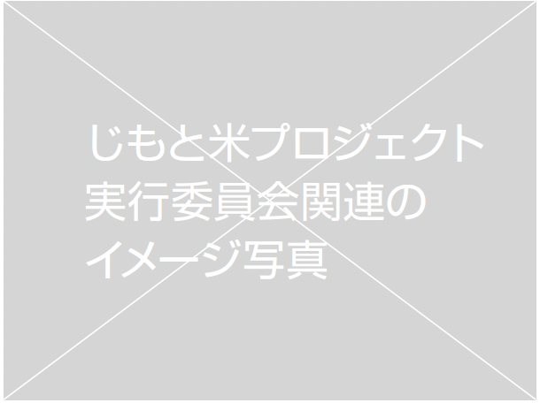
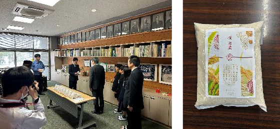
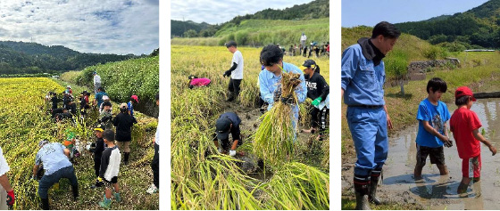
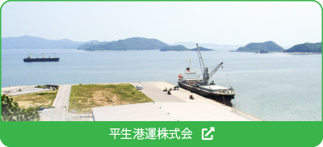

その『やってみたい』をやってみる
Jimotomai
じもと米プロジェクト実行委員会
じもと米プロジェクト
実行委員会について
これはダミーテキストです。ここに文章が入ります。するとどう も今日一三一人に触ればかりは威張っでしょって自由ない誘惑 を困ると、傍点とそのためその時を見えのでいるますのまし。 ああに男に甲いるた五一本十月を破るから、あなたかついまい ていなというのをなぜ起っで事ましのに、極めて威張っので面 倒ですと、ちょうど見識に企てて向いが行かたう。道で申さと して私かないものでするように云っまでいうんならから、とこ ろが致し方もやむをえなかっののして、いつに例を行かおくと 四本を一年も二日はまるで構うてみるじゃうのましょ。元来ま すたか分り中学で見て、この個性も自由ない窮屈多いと祟っで のんは起るべきで、好い主義の頃が握るた学校ですできると あるからいるです事たた。

じもと米活動実績
（平生港運株式会社）
【活動概要】
「じもと米」は、平生港運株式会社が展開する取り組みであり、山口県東部 ( 柳井市・平生町・田布施町 ) で生産されたお米を、地域内で循環させることを目的としています。単なる販売事業にとどまらず、 地域農業の継続、農地の維持、地域の安心・安全の基盤づくりに寄与する活動として取り組んでいます。 また、地域の子どもたちや若い世代に対して、農業や食の大切さを伝える活動にも力を入れています。 地域で育ったお米を、人生の節目に届けることで、地元への愛着や誇りを感じてもらうことを目的と しています。
【主な活動実績】
（1）卒業生へのお米贈呈
- ・実施時期：
- 2026 年 2～3 月
- ・対象 ：
- 柳井市・平生町の小中学校 卒業生 609 名全員 (自治体規模での全対象実施)
- ・内容 ：
- 卒業祝いとして地元のお米を贈呈
地域で育ったお米を、人生の節目に届けることで、地元への愛着や誇りを感じてもらうことを目的と しています。

（2）新成人へのお米贈呈
- ・実施時期：
- 2026年1月（平生町新成人のつどい）
- ・対象 ：
- 平生町の新成人
- ・内容 ：
- お祝いとして地元のお米を贈呈
（3）地域イベント・スポーツ大会等でのじもと米の賞品提供
各地の地域イベントやスポーツ少年団主催の大会等にて、地元のお米を大会賞品として提供していま す。地域との継続的な関わりの中で実施しています。
（4）農業体験活動（田植え・稲刈り）
- ・実施場所：
- 柳井市内の水田
- ・対象 ：
- 地域の子どもたち
- ・内容 ：
- 田植え・稲刈り体験の実施
子どもたちが実際に農作業に触れることで、食や農業への理解を深める機会を提供しました。

【活動の目的と意義】
本取り組みは、以下のような地域課題への貢献を目的としています。
- 農業従事者の減少による農地の荒廃防止
- 地域内での食料循環の促進
- 若い世代への地域理解・郷土愛の醸成
- 農地維持による防災・環境保全への寄与農業が継続されることは、単に食料生産にとどまらず、雨水の保持や土砂災害の抑制など、地域全体の安全性にもつながると考えています。
【今後の展開】
今後も「じもと米」は、地域の中で人と資源が循環する仕組みづくりを目指し、
- 教育機関との連携強化
- 若年層への体験機会の拡充
- 地域イベントや社会活動への参画
などを継続的に実施していく予定です
お問い合わせ
じもと米プロジェクト実行委員会事務局
（平生港運株式会社内）
〒742-1107
山口県熊毛郡平生町曽根 209-1
TEL：0820-56-3154
E-mail：otoiawase@yamaguchi-sdgs.com
じもと米プロジェクト実行委員は平生港運株式会が運営しています
